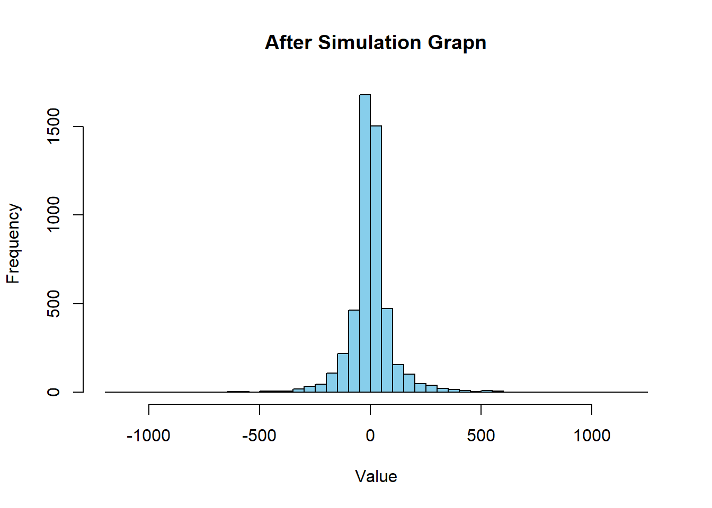
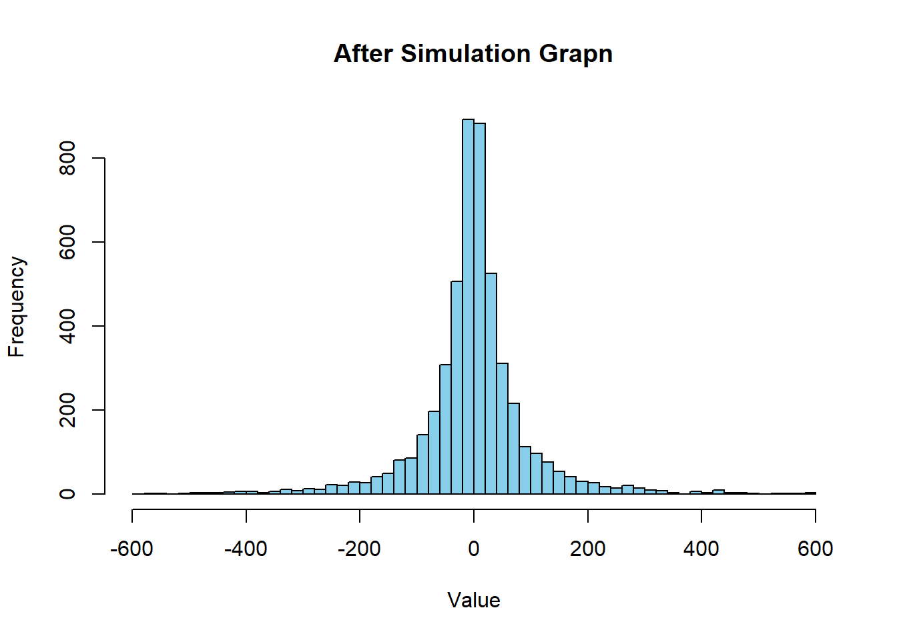
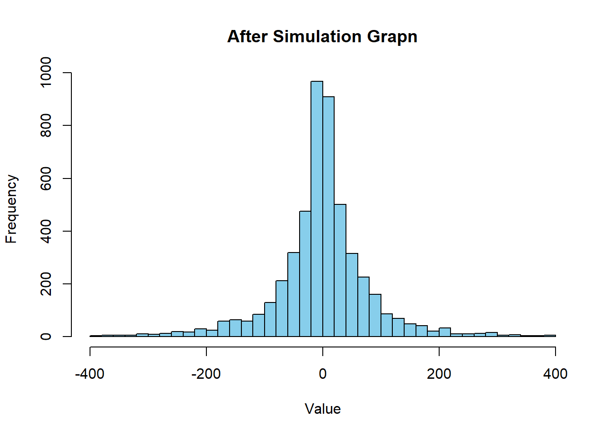
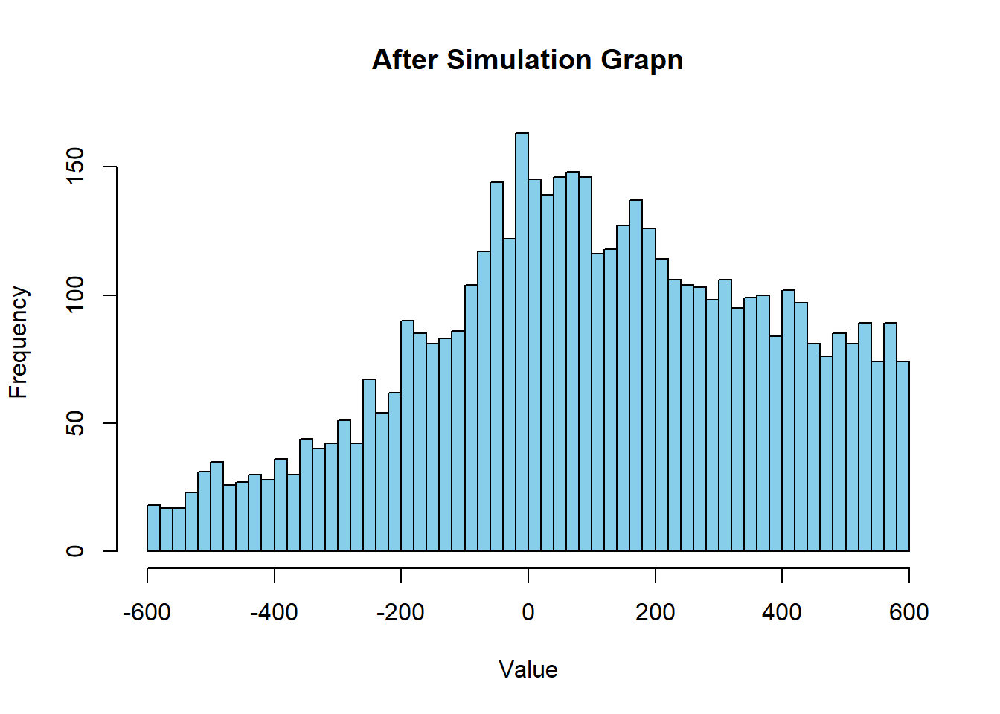
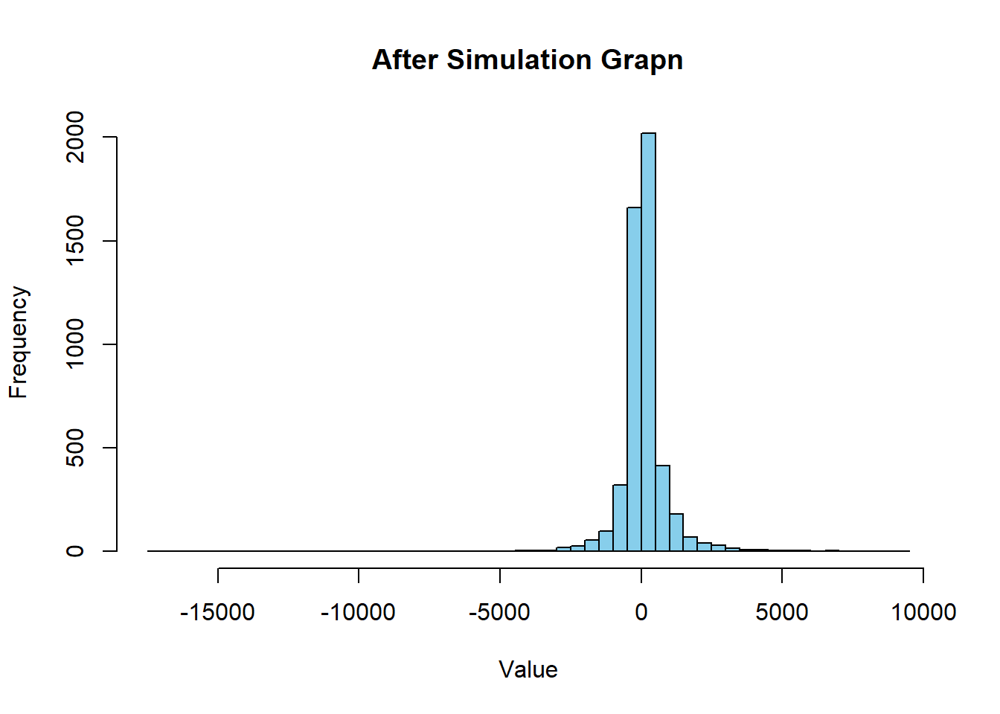
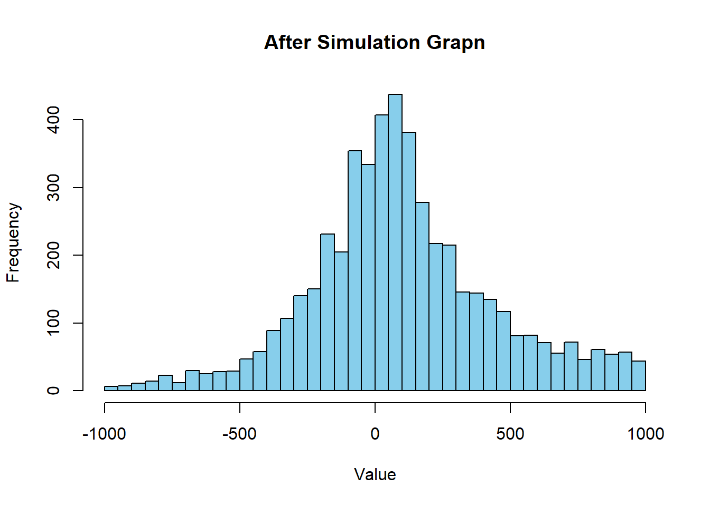
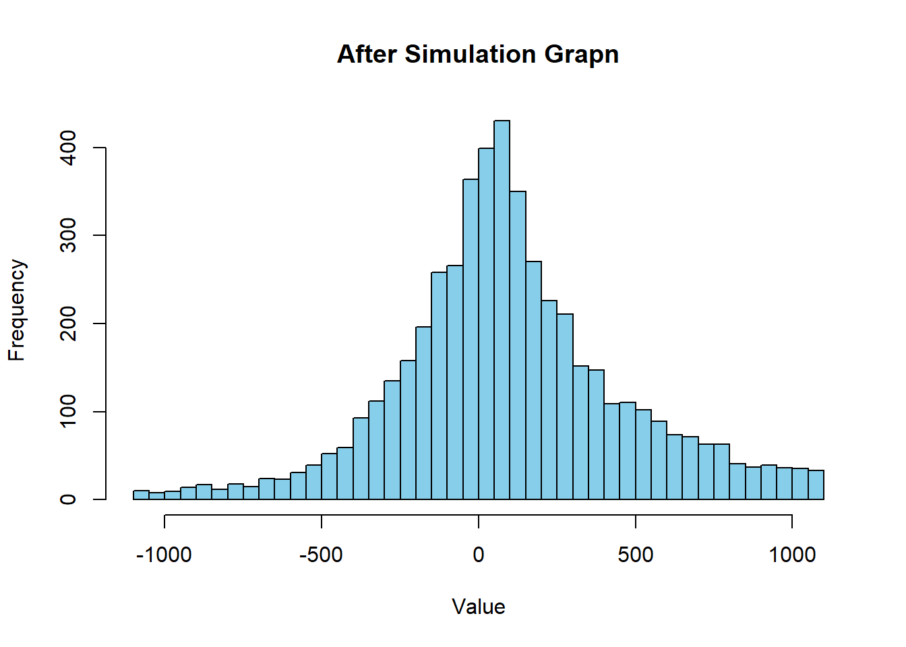

So I made everything overcomplicated whereas I think I should keep the rules of the economy simple: both numbers get added with their absolute difference to 0 (|x|). So maximum = pot and minimum =-pot for the first value we get. After randomly assigning the first value we get (z) from that range . We proceed by summing up x and y. This will give us their absolute value of worth. This one minus z should give us the new q.
Code
N<-5000# Population.MU<-0# Mean of the Populationstd_dev<-20# Standard deviationpopulation<-rnorm(N, mean =MU, sd =std_dev)round_population<-round(population)anyone<-function(round_population){sample(seq_along(round_population), 2)}anyone(round_population)
[1] 3291 2950
Code
new_random_split<-function(x,y){pot<-abs(x)+abs(y)part1<-sample(-pot:pot, 1)other_pot<-x+ypart2<-other_pot-part1return(c(part1, part2))}simulation<-function(round_population,repetitions){for(iin1:repetitions){selected_people<-anyone(round_population)person1<-round_population[selected_people[1]]person2<-round_population[selected_people[2]]new_wealth<-new_random_split(person1, person2)round_population[selected_people[1]]<-new_wealth[1]round_population[selected_people[2]]<-new_wealth[2]}return(round_population)}repetitions<-10000final_population<-simulation(round_population, repetitions)hist(final_population, breaks =50, main ="After Simulation Grapn", xlab ="Value", col ="skyblue")

Okay so it works!
I will put up a limit again so that the graph isnt as steep.
Code
N<-5000# Population.MU<-0# Mean of the Populationstd_dev<-20# Standard deviationpopulation<-rnorm(N, mean =MU, sd =std_dev)round_population<-round(population)anyone<-function(round_population){sample(seq_along(round_population), 2)}new_random_split<-function(x,y){pot<-abs(x)+abs(y)part1<-sample(-pot:pot, 1)other_pot<-x+ypart2<-other_pot-part1while(part1>600||part2>600||part1<-600||part2<-600){part1<-sample(-pot:pot, 1)other_pot<-x+ypart2<-other_pot-part1}return(c(part1, part2))}simulation<-function(round_population,repetitions){for(iin1:repetitions){selected_people<-anyone(round_population)person1<-round_population[selected_people[1]]person2<-round_population[selected_people[2]]new_wealth<-new_random_split(person1, person2)round_population[selected_people[1]]<-new_wealth[1]round_population[selected_people[2]]<-new_wealth[2]}return(round_population)}repetitions<-10000final_population<-simulation(round_population, repetitions)hist(final_population, breaks =50, main ="After Simulation Grapn", xlab ="Value", col ="skyblue")

naa lets do the cut at 400. I think then it will start to look better.
Code
N<-5000# Population.MU<-0# Mean of the Populationstd_dev<-20# Standard deviationpopulation<-rnorm(N, mean =MU, sd =std_dev)round_population<-round(population)anyone<-function(round_population){sample(seq_along(round_population), 2)}new_random_split<-function(x,y){pot<-abs(x)+abs(y)part1<-sample(-pot:pot, 1)other_pot<-x+ypart2<-other_pot-part1while(part1>400||part2>400||part1<-400||part2<-400){part1<-sample(-pot:pot, 1)other_pot<-x+ypart2<-other_pot-part1}return(c(part1, part2))}simulation<-function(round_population,repetitions){for(iin1:repetitions){selected_people<-anyone(round_population)person1<-round_population[selected_people[1]]person2<-round_population[selected_people[2]]new_wealth<-new_random_split(person1, person2)round_population[selected_people[1]]<-new_wealth[1]round_population[selected_people[2]]<-new_wealth[2]}return(round_population)}repetitions<-10000final_population<-simulation(round_population, repetitions)hist(final_population, breaks =50, main ="After Simulation Grapn", xlab ="Value", col ="skyblue")

Now lets shift the normal distribution
Code
N<-5000# Population.MU<-100# Mean of the Populationstd_dev<-20# Standard deviationpopulation<-rnorm(N, mean =MU, sd =std_dev)round_population<-round(population)anyone<-function(round_population){sample(seq_along(round_population), 2)}new_random_split<-function(x,y){pot<-abs(x)+abs(y)part1<-sample(-pot:pot, 1)other_pot<-x+ypart2<-other_pot-part1while(part1>600||part2>600||part1<-600||part2<-600){part1<-sample(-pot:pot, 1)other_pot<-x+ypart2<-other_pot-part1}return(c(part1, part2))}simulation<-function(round_population,repetitions){for(iin1:repetitions){selected_people<-anyone(round_population)person1<-round_population[selected_people[1]]person2<-round_population[selected_people[2]]new_wealth<-new_random_split(person1, person2)round_population[selected_people[1]]<-new_wealth[1]round_population[selected_people[2]]<-new_wealth[2]}return(round_population)}repetitions<-1000000final_population<-simulation(round_population, repetitions)hist(final_population, breaks =50, main ="After Simulation Grapn", xlab ="Value", col ="skyblue")

So even if I add 0 or two more zero to the repetitions, we get this stable curve seen above. Maybe I have to take a way the maximum curving to see what will happen.
Code
N<-5000# Population.MU<-100# Mean of the Populationstd_dev<-20# Standard deviationpopulation<-rnorm(N, mean =MU, sd =std_dev)round_population<-round(population)anyone<-function(round_population){sample(seq_along(round_population), 2)}new_random_split<-function(x,y){pot<-abs(x)+abs(y)part1<-sample(-pot:pot, 1)other_pot<-x+ypart2<-other_pot-part1return(c(part1, part2))}simulation<-function(round_population,repetitions){for(iin1:repetitions){selected_people<-anyone(round_population)person1<-round_population[selected_people[1]]person2<-round_population[selected_people[2]]new_wealth<-new_random_split(person1, person2)round_population[selected_people[1]]<-new_wealth[1]round_population[selected_people[2]]<-new_wealth[2]}return(round_population)}repetitions<-10000final_population<-simulation(round_population, repetitions)hist(final_population, breaks =50, main ="After Simulation Grapn", xlab ="Value", col ="skyblue")

I created even more extreme wealth than ever seen before. So lets cut it at 1000 and go from there.
Code
N<-5000# Population.MU<-100# Mean of the Populationstd_dev<-20# Standard deviationpopulation<-rnorm(N, mean =MU, sd =std_dev)round_population<-round(population)anyone<-function(round_population){sample(seq_along(round_population), 2)}new_random_split<-function(x,y){pot<-abs(x)+abs(y)part1<-sample(-pot:pot, 1)other_pot<-x+ypart2<-other_pot-part1while(part1>1000||part2>1000||part1<-1000||part2<-1000){part1<-sample(-pot:pot, 1)other_pot<-x+ypart2<-other_pot-part1}return(c(part1, part2))}simulation<-function(round_population,repetitions){for(iin1:repetitions){selected_people<-anyone(round_population)person1<-round_population[selected_people[1]]person2<-round_population[selected_people[2]]new_wealth<-new_random_split(person1, person2)round_population[selected_people[1]]<-new_wealth[1]round_population[selected_people[2]]<-new_wealth[2]}return(round_population)}repetitions<-10000final_population<-simulation(round_population, repetitions)hist(final_population, breaks =50, main ="After Simulation Grapn", xlab ="Value", col ="skyblue")

This looks even more like a normal distribution! so cool.
Maybe its about finding the sweetspot.
Code
N<-5000# Population.MU<-100# Mean of the Populationstd_dev<-20# Standard deviationpopulation<-rnorm(N, mean =MU, sd =std_dev)round_population<-round(population)anyone<-function(round_population){sample(seq_along(round_population), 2)}new_random_split<-function(x,y){pot<-abs(x)+abs(y)part1<-sample(-pot:pot, 1)other_pot<-x+ypart2<-other_pot-part1while(part1>1100||part2>1100||part1<-1100||part2<-1100){part1<-sample(-pot:pot, 1)other_pot<-x+ypart2<-other_pot-part1}return(c(part1, part2))}simulation<-function(round_population,repetitions){for(iin1:repetitions){selected_people<-anyone(round_population)person1<-round_population[selected_people[1]]person2<-round_population[selected_people[2]]new_wealth<-new_random_split(person1, person2)round_population[selected_people[1]]<-new_wealth[1]round_population[selected_people[2]]<-new_wealth[2]}return(round_population)}repetitions<-10000final_population<-simulation(round_population, repetitions)hist(final_population, breaks =50, main ="After Simulation Grapn", xlab ="Value", col ="skyblue")

Here something very interesting happens. If I adjust the repetions to the potency of 10, the graph looks way different.
Code
N<-5000# Population.MU<-100# Mean of the Populationstd_dev<-20# Standard deviationpopulation<-rnorm(N, mean =MU, sd =std_dev)round_population<-round(population)anyone<-function(round_population){sample(seq_along(round_population), 2)}new_random_split<-function(x,y){pot<-abs(x)+abs(y)part1<-sample(-pot:pot, 1)other_pot<-x+ypart2<-other_pot-part1while(part1>1100||part2>1100||part1<-1100||part2<-1100){part1<-sample(-pot:pot, 1)other_pot<-x+ypart2<-other_pot-part1}return(c(part1, part2))}simulation<-function(round_population,repetitions){for(iin1:repetitions){selected_people<-anyone(round_population)person1<-round_population[selected_people[1]]person2<-round_population[selected_people[2]]new_wealth<-new_random_split(person1, person2)round_population[selected_people[1]]<-new_wealth[1]round_population[selected_people[2]]<-new_wealth[2]}return(round_population)}repetitions<-1000000final_population<-simulation(round_population, repetitions)hist(final_population, breaks =50, main ="After Simulation Grapn", xlab ="Value", col ="skyblue")
---title: "Minus and Plus Curve"author: "Thomas Walker"---So I made everything overcomplicated whereas I think I should keep the rules of the economy simple: both numbers get added with their absolute difference to 0 (\|x\|). So maximum = pot and minimum =-pot for the first value we get. After randomly assigning the first value we get (z) from that range . We proceed by summing up x and y. This will give us their absolute value of worth. This one minus z should give us the new q.```{r}N <-5000# Population.MU <-0# Mean of the Populationstd_dev <-20# Standard deviationpopulation <-rnorm(N, mean = MU, sd = std_dev)round_population <-round(population)anyone <-function(round_population){sample(seq_along(round_population), 2)}anyone(round_population)new_random_split <-function(x,y){ pot <-abs(x) +abs(y) part1 <-sample(-pot:pot, 1) other_pot <- x + y part2 <- other_pot - part1return(c(part1, part2))}simulation <-function(round_population,repetitions) {for (i in1:repetitions) { selected_people <-anyone(round_population) person1 <- round_population[selected_people[1]] person2 <- round_population[selected_people[2]] new_wealth <-new_random_split(person1, person2) round_population[selected_people[1]] <- new_wealth[1] round_population[selected_people[2]] <- new_wealth[2] }return(round_population)}repetitions <-10000final_population <-simulation(round_population, repetitions)hist(final_population, breaks =50, main ="After Simulation Grapn", xlab ="Value", col ="skyblue")```Okay so it works!I will put up a limit again so that the graph isnt as steep.```{r}N <-5000# Population.MU <-0# Mean of the Populationstd_dev <-20# Standard deviationpopulation <-rnorm(N, mean = MU, sd = std_dev)round_population <-round(population)anyone <-function(round_population){sample(seq_along(round_population), 2)}new_random_split <-function(x,y){ pot <-abs(x) +abs(y) part1 <-sample(-pot:pot, 1) other_pot <- x + y part2 <- other_pot - part1while (part1 >600|| part2 >600|| part1 <-600|| part2 <-600){ part1 <-sample(-pot:pot, 1) other_pot <- x + y part2 <- other_pot - part1 }return(c(part1, part2))}simulation <-function(round_population,repetitions) {for (i in1:repetitions) { selected_people <-anyone(round_population) person1 <- round_population[selected_people[1]] person2 <- round_population[selected_people[2]] new_wealth <-new_random_split(person1, person2) round_population[selected_people[1]] <- new_wealth[1] round_population[selected_people[2]] <- new_wealth[2] }return(round_population)}repetitions <-10000final_population <-simulation(round_population, repetitions)hist(final_population, breaks =50, main ="After Simulation Grapn", xlab ="Value", col ="skyblue")```naa lets do the cut at 400. I think then it will start to look better.```{r}N <-5000# Population.MU <-0# Mean of the Populationstd_dev <-20# Standard deviationpopulation <-rnorm(N, mean = MU, sd = std_dev)round_population <-round(population)anyone <-function(round_population){sample(seq_along(round_population), 2)}new_random_split <-function(x,y){ pot <-abs(x) +abs(y) part1 <-sample(-pot:pot, 1) other_pot <- x + y part2 <- other_pot - part1while (part1 >400|| part2 >400|| part1 <-400|| part2 <-400){ part1 <-sample(-pot:pot, 1) other_pot <- x + y part2 <- other_pot - part1 }return(c(part1, part2))}simulation <-function(round_population,repetitions) {for (i in1:repetitions) { selected_people <-anyone(round_population) person1 <- round_population[selected_people[1]] person2 <- round_population[selected_people[2]] new_wealth <-new_random_split(person1, person2) round_population[selected_people[1]] <- new_wealth[1] round_population[selected_people[2]] <- new_wealth[2] }return(round_population)}repetitions <-10000final_population <-simulation(round_population, repetitions)hist(final_population, breaks =50, main ="After Simulation Grapn", xlab ="Value", col ="skyblue")```Now lets shift the normal distribution```{r}N <-5000# Population.MU <-100# Mean of the Populationstd_dev <-20# Standard deviationpopulation <-rnorm(N, mean = MU, sd = std_dev)round_population <-round(population)anyone <-function(round_population){sample(seq_along(round_population), 2)}new_random_split <-function(x,y){ pot <-abs(x) +abs(y) part1 <-sample(-pot:pot, 1) other_pot <- x + y part2 <- other_pot - part1while (part1 >600|| part2 >600|| part1 <-600|| part2 <-600){ part1 <-sample(-pot:pot, 1) other_pot <- x + y part2 <- other_pot - part1 }return(c(part1, part2))}simulation <-function(round_population,repetitions) {for (i in1:repetitions) { selected_people <-anyone(round_population) person1 <- round_population[selected_people[1]] person2 <- round_population[selected_people[2]] new_wealth <-new_random_split(person1, person2) round_population[selected_people[1]] <- new_wealth[1] round_population[selected_people[2]] <- new_wealth[2] }return(round_population)}repetitions <-1000000final_population <-simulation(round_population, repetitions)hist(final_population, breaks =50, main ="After Simulation Grapn", xlab ="Value", col ="skyblue")```So even if I add 0 or two more zero to the repetitions, we get this stable curve seen above. Maybe I have to take a way the maximum curving to see what will happen.```{r}N <-5000# Population.MU <-100# Mean of the Populationstd_dev <-20# Standard deviationpopulation <-rnorm(N, mean = MU, sd = std_dev)round_population <-round(population)anyone <-function(round_population){sample(seq_along(round_population), 2)}new_random_split <-function(x,y){ pot <-abs(x) +abs(y) part1 <-sample(-pot:pot, 1) other_pot <- x + y part2 <- other_pot - part1return(c(part1, part2))}simulation <-function(round_population,repetitions) {for (i in1:repetitions) { selected_people <-anyone(round_population) person1 <- round_population[selected_people[1]] person2 <- round_population[selected_people[2]] new_wealth <-new_random_split(person1, person2) round_population[selected_people[1]] <- new_wealth[1] round_population[selected_people[2]] <- new_wealth[2] }return(round_population)}repetitions <-10000final_population <-simulation(round_population, repetitions)hist(final_population, breaks =50, main ="After Simulation Grapn", xlab ="Value", col ="skyblue")```I created even more extreme wealth than ever seen before. So lets cut it at 1000 and go from there.```{r}N <-5000# Population.MU <-100# Mean of the Populationstd_dev <-20# Standard deviationpopulation <-rnorm(N, mean = MU, sd = std_dev)round_population <-round(population)anyone <-function(round_population){sample(seq_along(round_population), 2)}new_random_split <-function(x,y){ pot <-abs(x) +abs(y) part1 <-sample(-pot:pot, 1) other_pot <- x + y part2 <- other_pot - part1while (part1 >1000|| part2 >1000|| part1 <-1000|| part2 <-1000){ part1 <-sample(-pot:pot, 1) other_pot <- x + y part2 <- other_pot - part1 }return(c(part1, part2))}simulation <-function(round_population,repetitions) {for (i in1:repetitions) { selected_people <-anyone(round_population) person1 <- round_population[selected_people[1]] person2 <- round_population[selected_people[2]] new_wealth <-new_random_split(person1, person2) round_population[selected_people[1]] <- new_wealth[1] round_population[selected_people[2]] <- new_wealth[2] }return(round_population)}repetitions <-10000final_population <-simulation(round_population, repetitions)hist(final_population, breaks =50, main ="After Simulation Grapn", xlab ="Value", col ="skyblue")```This looks even more like a normal distribution! so cool.Maybe its about finding the sweetspot.```{r}N <-5000# Population.MU <-100# Mean of the Populationstd_dev <-20# Standard deviationpopulation <-rnorm(N, mean = MU, sd = std_dev)round_population <-round(population)anyone <-function(round_population){sample(seq_along(round_population), 2)}new_random_split <-function(x,y){ pot <-abs(x) +abs(y) part1 <-sample(-pot:pot, 1) other_pot <- x + y part2 <- other_pot - part1while (part1 >1100|| part2 >1100|| part1 <-1100|| part2 <-1100){ part1 <-sample(-pot:pot, 1) other_pot <- x + y part2 <- other_pot - part1 }return(c(part1, part2))}simulation <-function(round_population,repetitions) {for (i in1:repetitions) { selected_people <-anyone(round_population) person1 <- round_population[selected_people[1]] person2 <- round_population[selected_people[2]] new_wealth <-new_random_split(person1, person2) round_population[selected_people[1]] <- new_wealth[1] round_population[selected_people[2]] <- new_wealth[2] }return(round_population)}repetitions <-10000final_population <-simulation(round_population, repetitions)hist(final_population, breaks =50, main ="After Simulation Grapn", xlab ="Value", col ="skyblue")```Here something very interesting happens. If I adjust the repetions to the potency of 10, the graph looks way different.```{r}N <-5000# Population.MU <-100# Mean of the Populationstd_dev <-20# Standard deviationpopulation <-rnorm(N, mean = MU, sd = std_dev)round_population <-round(population)anyone <-function(round_population){sample(seq_along(round_population), 2)}new_random_split <-function(x,y){ pot <-abs(x) +abs(y) part1 <-sample(-pot:pot, 1) other_pot <- x + y part2 <- other_pot - part1while (part1 >1100|| part2 >1100|| part1 <-1100|| part2 <-1100){ part1 <-sample(-pot:pot, 1) other_pot <- x + y part2 <- other_pot - part1 }return(c(part1, part2))}simulation <-function(round_population,repetitions) {for (i in1:repetitions) { selected_people <-anyone(round_population) person1 <- round_population[selected_people[1]] person2 <- round_population[selected_people[2]] new_wealth <-new_random_split(person1, person2) round_population[selected_people[1]] <- new_wealth[1] round_population[selected_people[2]] <- new_wealth[2] }return(round_population)}repetitions <-1000000final_population <-simulation(round_population, repetitions)hist(final_population, breaks =50, main ="After Simulation Grapn", xlab ="Value", col ="skyblue")```